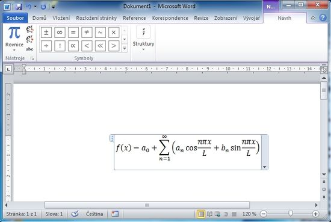
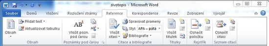

Aplikačný softvér (aplikácia) - je súhrnný pojem. Jedná sa o softvér, s ktorým pracuje používateľ a ktorý potrebuje k svojmu behu systémový softvér.
Medzi aplikačný softvér patrí:
- Kancelárske aplikácie
- Komunikačné programy
- Grafické programy
- Antivírusové a bezpečnostné programy - napr antivírus, firewall
- Vývojové nástroje (pre tvorbu software)
- Webová aplikácia
- Podnikové aplikácie
Ponuka príkazov se dá menit. Stačí kliknut na ovládací prvok napravo od posledneho príkazu.
Na výber máme zoznam základních príkazov. Dalšie ide pridat ked vyberieme položku Dalšie príkazy. Dalša možnost je umiestnenie panelu. Posledním príkazom môžeme minimalizovat pás kariet.
Základne formátovánie písma, odstavce, číslovánie, odrážky
Zvolte kartu Domov v sekci Písmo. Tato sekcia obsahuje možnosti formátovania písma:
- typ písma - tučné, kurzíva, podtržené
- druh písma - ako bude font vyzerať (Arial, Calibri, Times new roman, ...)
- velkost písma - jak velké potrebujeme písmo v bodech
- barva písma - barva písma
Zvolte kartu Domov v sekci Odstavec. Tato sekcia umožňuje formátovat odstavec obsahuje:
- zarovnání - napravo, nalevo, na střed, do bloku
- odrážky - textu přidá odrážky
- číslování - vytvoří číslovaný seznam
Priradenie stylov nadpisom
Spomínanou metodov formátovania je použít štýly.
Na prvý pohľad je výsledok rovnaky ako pri použití klasického formátování, na druhý pohľad už to ale nie je.
Zvolte kartu Domov v sekci Styly. Tato sekcia obsahuje možnosti prirazení stylov.
Ak vložíte obrázok (napríklad fotografií) do vašeho životopisu? Na karte Vloženie sekcia Ilustracia ikonka Obráz
Zobrazí se okno Vložit obrázek. Výber vhodného obrázku provedete z vašeho disku.
Po kliku na Vložit bude obrázok vlozeny do vašeho dokumentu.

Vloženie tabulky
Vloženie tabulky prevediete na karte vloženia sekcie Tabulky.
Klikem na ikonu Tabulka sa zobrazi možnost zvolit velikost tabulky (počet riádkov/stlpcov).
Velkost volite tahanim myšov (aktuálna velkost je graficky označená). Až budete s tabulkou spokojeni potvrdíte pravým klikem.
Vloženie symbolov, vzorcov
Vložení symbolů (c) nebo (R), atd. Na kartě Vložení sekce Symboly ikona Symbol. Z nabízených symbolů vyberete požadovaný.
Vloženie vzorca
Vkládánie vzorcov na karte Vloženie sekcia Symboly ikona rovnic
Automatická tvorba obsahu
Obsah se hodí pro dalsie dokumenty (diplomové a ročníkové práce, studia,...), ktoré získaju prehliadno
Automatické vloženie obsahu kurzor umiestnite na miesto, kde chcete mat obsah.
Na karte Referencie sekcia Obsah kliknete na Obsah. V rozbalenom menu vyberte jeden z preddefinovaných obsahov.